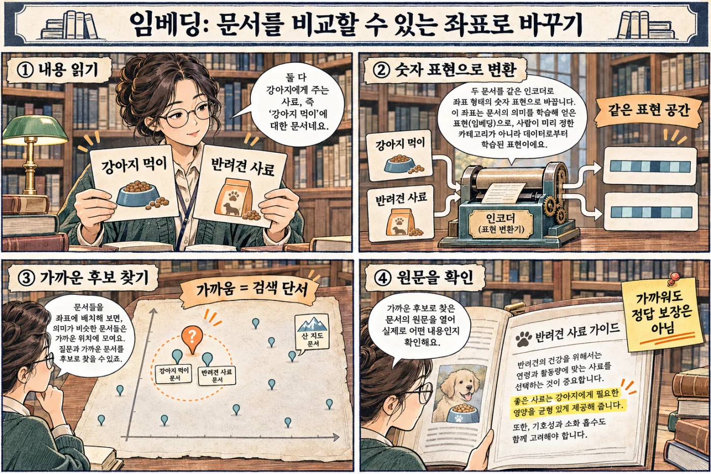
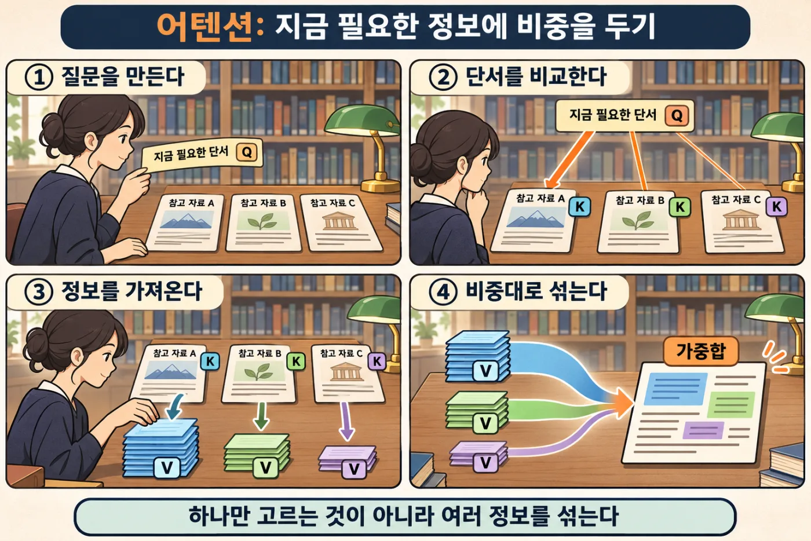

LLM의 작동과 한계
다음 말을 맞히는 기계
휴대전화 자판은 내가 "안녕"까지 치면 "하세요"를 추천해 줍니다. 다음에 올 말을 맞히는 것입니다. 사람처럼 대화하는 AI도 하는 일은 같습니다. 엄청나게 많은 글을 읽고, 다음에 올 말을 아주 잘 맞히게 된 것입니다. 이것 하나만 알면 AI가 왜 가끔 틀린 말을 자신 있게 하는지도 이해할 수 있습니다.
- 대화하는 AI가 글을 만들어 내는 방법을 설명할 수 있습니다.
- 같은 질문에 답이 달라지는 이유를 말할 수 있습니다.
- AI가 틀린 말을 자신 있게 하는 이유와 줄이는 방법을 알 수 있습니다.
- AI가 한 번에 기억할 수 있는 양에 한계가 있다는 것을 설명할 수 있습니다.
27.1LLM은 글을 엄청나게 많이 읽은 자동 완성입니다#
이번에는 휴대전화 자판에 "오늘 날씨가"까지 쳐 봅시다. 자판 위쪽에 "좋다", "흐리다" 같은 낱말이 뜹니다. 다음에 올 말을 미리 맞혀 보는 것입니다. 이런 기능을 자동 완성이라고 합니다.
사람처럼 대화하는 AI 안에도 다음 말을 맞히는 프로그램이 들어 있습니다. 이 프로그램을 LLM(Large Language Model)이라고 부릅니다. 우리말로는 '대규모 언어 모델', 곧 말을 다루는 아주 큰 프로그램입니다. 이 장에서는 짧게 '모델'이라고도 부르겠습니다.
LLM이 하는 일은 두 단계입니다.
- 지금까지의 글을 보고, 다음에 올 수 있는 말마다 확률을 매깁니다. 확률은 그 말이 나올 가능성을 숫자로 적은 것입니다.
- 그 가운데 하나를 뽑아 글 뒤에 붙입니다.
그림에서 "오늘 날씨가" 뒤에 올 말은 "좋다"가 50%, "흐리다"가 30%, "춥다"가 15%, "수상하다"가 5%입니다. 여기서는 "좋다"가 뽑혔습니다. 모델은 늘어난 글 "오늘 날씨가 좋다"로 1번부터 다시 합니다. 이때 한 번에 뽑아 붙이는 말 한 조각을 토큰(token)이라고 부릅니다.
휴대전화 자판과 다른 점은 읽은 글의 양입니다. LLM은 책과 인터넷 글을 사람이 평생 읽어도 못 읽을 만큼 읽었습니다. 그 글로 "다음 말 맞히기"를 수없이 연습했습니다. 다음 말을 잘 맞히려면 문법도 상식도 몸에 배어야 합니다. 그래서 이어 쓰기만 하는데도 번역과 요약과 글짓기가 됩니다. '자동 완성'이라고 해서 실력이 휴대전화 자판만 하다는 뜻은 아닙니다.
이제부터 LLM을 이어 쓰기 달인이라고 부르겠습니다. 달인에게는 두 가지가 있습니다.
- 머릿속: 연습하면서 굳어진 감각입니다. 실제로는 수십억 개의 숫자이고, 이 숫자들을 파라미터(parameter)라고 합니다. 26장에서 본 가중치입니다.
- 책상 위: 이번에 건네받은 글입니다. 달인은 책상 위에 놓인 글만 보고 이어 씁니다.
달인이 굳어진 머릿속으로 답을 만들어 내는 일을 추론(inference)이라고 합니다. 우리가 AI에게 질문할 때마다 추론이 일어납니다.
모델이 하는 일은 글쓰기 하나입니다. 인터넷을 찾아보거나 파일을 저장하는 일은 혼자서 못 합니다. 모델 둘레의 프로그램이 도구를 이어 줬을 때만 됩니다(29장). 그래서 AI가 "파일을 저장했습니다"라고 썼다는 것과 파일이 정말 저장됐다는 것은 다른 일입니다. 직접 열어서 확인하세요.
LLM이 하는 계산은 하나뿐입니다. 지금까지의 토큰을 보고 다음 토큰의 확률을 구하는 것. 이 장의 나머지는 모두 여기서 나옵니다.
27.2토큰: 글자도 낱말도 아닌 조각#
모델은 글을 어떤 크기로 잘라서 읽을까요? 글자 하나씩 읽으면 조각이 너무 많아집니다. 낱말 하나씩 읽으면 처음 보는 낱말에서 막힙니다. 그래서 그 중간 크기의 조각으로 자릅니다. 이 조각이 토큰입니다.
레고와 비슷합니다. 자주 쓰는 모양은 큰 블록 하나로 두고, 드문 모양은 작은 블록 여러 개로 맞춥니다. 자주 나오는 낱말은 통째로 토큰 하나가 되고, 드문 낱말은 여러 토큰으로 쪼개집니다.
글을 토큰으로 자르고 토큰마다 번호를 붙이는 프로그램이 따로 있습니다. 이름은 토크나이저(tokenizer)입니다. 모델이 실제로 받는 것은 글이 아니라 이 번호의 줄입니다.
그림에서 영어 문장 "I ate an apple."은 토큰 5개로 잘렸습니다. apple은 통째로 토큰 하나이고 9117번이 붙었습니다. 뜻이 같은 우리말 "나는 사과를 먹었다."는 토큰 8개로 잘렸습니다. 글자 수는 영어가 15개, 우리말이 11개입니다. 글자는 우리말이 더 적은데 토큰은 더 많이 듭니다.
두 가지를 기억해 두세요.
- 토큰 수는 글자 수와 다릅니다. 같은 내용이면 우리말이 영어보다 토큰을 더 쓸 때가 많습니다.
- 번호는 이름표일 뿐입니다. 9117번이 40번보다 중요하다는 뜻이 아닙니다. 반 번호 25번이 3번보다 중요한 학생이 아닌 것과 같습니다.
토큰이 중요한 까닭은 LLM에서는 무엇이든 토큰으로 세기 때문입니다. 한 번에 읽을 수 있는 글의 양도, AI를 쓰는 값도, 답이 나오는 빠르기도 토큰으로 셉니다.
27.3임베딩: 토큰을 뜻의 지도 위에 놓기#
번호만 봐서는 뜻을 알 수 없습니다. "강아지"가 5121번이라고 해서 5122번이 비슷한 말인 것은 아닙니다. 그래서 모델은 맨 먼저 번호를 좌표로 바꿉니다. 좌표는 지도에서 자리를 나타내는 숫자 묶음입니다.
지도에서 서울과 수원은 가깝고 서울과 부산은 멉니다. 모델이 쓰는 지도는 뜻의 지도입니다. 뜻이 비슷한 말은 가까이, 뜻이 다른 말은 멀리 놓입니다. 이렇게 토큰의 뜻을 담은 좌표를 임베딩(embedding)이라고 합니다.
그림 왼쪽에서 "강아지"는 번호 5121이 되고, 다시 [0.82, 0.10, -0.31, …]이라는 숫자 목록이 됩니다. 이 숫자 목록이 좌표입니다. 실제로는 숫자가 수백에서 수천 개입니다.
오른쪽 지도에서는 동물끼리, 음식끼리, 쇼핑에 쓰는 말끼리 모여 있습니다. "환불"과 "반품"은 겹치는 글자가 없지만 이웃입니다. 둘 다 산 물건을 되돌리는 일이기 때문입니다.
이 지도는 사람이 손으로 그린 것이 아닙니다. 모델이 글을 읽으며 연습하는 동안 저절로 생깁니다. 비슷한 자리에 쓰이는 말이 비슷한 좌표를 갖도록 숫자가 조금씩 고쳐지기 때문입니다.
토큰 하나가 아니라 글 한 편을 통째로 좌표 하나로 바꿀 수도 있습니다. 그러면 질문과 뜻이 가까운 글을 찾을 수 있습니다. "반품 기한"이라고 물어도 "환불할 수 있는 기간"이라고 적힌 글이 찾아집니다.

만화의 마지막 칸처럼, 가깝다는 것은 후보라는 뜻일 뿐입니다. 뜻은 비슷해도 다른 물건의 안내문일 수 있습니다. 그래서 찾아낸 글은 직접 열어서 확인합니다.
27.4트랜스포머: 앞말을 섞고, 계산하고, 되풀이하기#
"배"라는 말에는 먹는 배도, 타는 배도, 우리 몸의 배도 있습니다. 그런데 "배"라는 토큰의 좌표는 하나뿐입니다. 좌표만 봐서는 어느 배인지 알 수 없습니다.
사람은 앞에 놓인 말을 보고 압니다. "항구에서 배"는 타는 배이고 "과일 가게에서 배"는 먹는 배입니다. 이렇게 둘레에 놓여 뜻을 정해 주는 말들을 문맥이라고 합니다.
모델도 똑같이 합니다. 토큰마다 앞에 놓인 토큰들을 둘러봅니다. 지금 쓸모 있는 토큰의 정보는 많이, 덜 쓸모 있는 토큰의 정보는 조금 섞어 옵니다. 이 계산을 어텐션(attention)이라고 합니다.
그림 위쪽에서 "배"는 "항구"의 정보를 70%, "에서"의 정보를 10% 섞어 옵니다. 나머지 20%는 "배" 자신의 몫입니다. 섞고 나면 "배"의 좌표는 '탈것' 쪽을 가리킵니다. 아래쪽에서는 "과일"에서 50%, "가게"에서 25%, "에서"에서 5%를 섞어 옵니다. 이번에는 '과일' 쪽을 가리킵니다.
얼마씩 섞을지는 어떻게 정할까요? 아래 만화로 봅시다. 사서는 "지금 이런 단서가 필요해"라고 적은 쪽지(Q)를 만듭니다. 그 쪽지를 자료마다 붙은 이름표(K)와 견줍니다. 잘 맞는 자료일수록 그 내용(V)을 많이 가져옵니다. 모델에서는 "배" 토큰이 사서이고 앞의 토큰들이 자료입니다.

섞은 다음에는 토큰마다 계산을 한 번 더 해서 섞어 온 정보를 소화합니다. "섞기 → 계산하기"가 한 묶음입니다. 모델은 이 묶음을 수십 번 되풀이합니다. 한 번 지날 때마다 토큰의 좌표에 더 넓은 문맥이 스며듭니다. 이런 짜임새를 트랜스포머(transformer)라고 합니다. 오늘날의 LLM은 거의 모두 트랜스포머입니다.
마지막 묶음을 지나면 모델은 맨 끝 토큰의 좌표로 자기가 아는 모든 토큰에 점수를 매깁니다. 이 점수가 첫 그림에서 본 확률이 됩니다. 후보마다 확률을 적은 이 표를 확률표라고 부르겠습니다.
27.5한 토큰씩 쓰기: 같은 질문에 답이 달라지는 까닭#
확률표가 나오면 모델은 토큰을 하나만 고릅니다. 그 토큰을 글 뒤에 붙입니다. 그리고 늘어난 글 전체를 처음부터 다시 읽고 같은 계산을 합니다. 모델이 읽는 글을 입력이라고 합니다.
그림에서는 "오늘 날씨가" 뒤에 "좋아서"가 뽑혔습니다. 모델은 "오늘 날씨가 좋아서"를 다시 읽고 "산책을"을 뽑습니다. 또 전부 읽고 "나갔다."를 뽑습니다. 마지막으로 '끝'을 뜻하는 특별한 토큰이 뽑히면 멈춥니다.
미리 정해 둔 가장 긴 길이에 닿아도 답이 멈춥니다. 이런 답은 할 말이 남은 잘린 답입니다. 글이 문장 가운데에서 뚝 끊겼다면 다 된 답으로 여기면 안 됩니다.
뽑을 때는 제비뽑기를 합니다
늘 1등만 고르면 글이 밋밋해지고 같은 말을 맴돌기 쉽습니다. 그래서 보통은 확률대로 제비를 뽑습니다.
제비 100장이 든 통을 떠올려 보세요. "좋다"가 50장, "흐리다"가 30장, "춥다"가 15장, "수상하다"가 5장입니다. 한 장을 뽑으면 "좋다"가 가장 자주 나오지만 가끔은 "수상하다"도 나옵니다. 이렇게 확률대로 뽑는 일을 샘플링(sampling)이라고 합니다.
같은 질문에 답이 달라지는 까닭이 이것입니다. 첫 토큰이 다르게 뽑히면 그 뒤의 글이 모두 달라집니다.
제비뽑기의 성질을 바꾸는 설정도 있습니다. 온도(temperature)입니다. 날씨의 온도와는 이름만 같습니다. 온도를 낮추면 1등 후보에 확률이 몰려 답이 늘 비슷해집니다. 온도를 높이면 드문 후보도 자주 뽑혀 답이 여러 가지로 나옵니다.
그림 가운데의 온도 1은 모델이 계산한 그대로입니다. 온도를 0.5로 낮추면 "좋다"가 68%로 오르고 "수상하다"는 1%로 줄어듭니다. 온도를 2로 올리면 "수상하다"가 12%가 됩니다. "오늘 날씨가 수상하다"가 여덟 번에 한 번쯤 나오는 셈입니다.
온도는 답이 얼마나 여러 가지로 나오는지를 바꿉니다. 답이 맞는지를 바꾸지는 않습니다. 모델이 틀린 답을 1등으로 꼽고 있다면, 온도를 낮출수록 그 틀린 답이 더 꾸준히 나옵니다.
AI 채팅에서 새 대화를 세 번 열어 "고양이 이름을 하나만 지어 줘"라고 똑같이 물어보세요. "1 더하기 1은?"도 세 번 물어보세요. 어느 쪽 답이 더 많이 달라지나요? 후보들의 확률이 비슷비슷한 질문일수록 제비뽑기가 크게 드러납니다.
27.6컨텍스트 윈도: 달인의 책상 넓이#
달인은 책상 위에 놓인 글만 보고 이어 씁니다. 이번에 모델에게 건넨 글 전체를 컨텍스트(context)라고 합니다.
책상에는 넓이가 있습니다. 한 번에 올려놓을 수 있는 가장 많은 토큰 수를 컨텍스트 윈도(context window)라고 합니다. 윈도는 '창'이라는 뜻입니다. 모델이 쓰는 답도 같은 책상에 놓입니다.
모델은 지난 대화를 기억하지 않습니다. 그런데도 채팅 앱은 앞에서 한 말을 기억하는 것처럼 보입니다. 앱이 매번 지금까지의 대화를 통째로 책상에 다시 올려 주기 때문입니다. 열 번째 질문을 보내면 모델은 앞의 아홉 번을 처음부터 다시 읽습니다.
책상에는 이런 것들이 올라갑니다.
- 앱을 만든 사람이 맨 앞에 깔아 두는 글. "너는 분식집 주문을 돕는 도우미야. 존댓말을 써" 같은 역할과 규칙입니다. 이 글을 시스템 프롬프트(system prompt)라고 합니다.
- 지금까지의 대화와 내가 붙인 파일(첨부 자료)
- 이번 질문
이렇게 모델에게 건네는 글을 통틀어 프롬프트(prompt)라고 합니다.
책상이 넘치면 어떻게 될까요? AI와 함께 학교 축제에서 쓸 분식 주문 앱을 만든다고 합시다. 창의 넓이는 8,000토큰입니다. 대화 초반에는 시스템 프롬프트 1,000, 대화 2,000, 첨부 자료 2,000이 올라가 있습니다. 답변 자리 1,000을 빼고도 2,000이 남습니다. 이때 내가 "결제 기능은 빼 주세요"라고 말해 두었습니다. 돈을 내는 기능은 만들지 말라는 뜻입니다.
대화가 6,500토큰으로 늘었습니다. 모두 더하면 1,000 + 6,500 + 2,000 + 1,000 = 10,500토큰입니다. 창보다 2,500이 많습니다. 앱은 오래된 대화부터 2,500을 창 밖으로 뺍니다. "결제 기능은 빼 주세요"도 함께 밀려났습니다.
밀려난 말은 모델이 다시 볼 수 없습니다. 그래서 AI는 빼기로 한 결제 기능을 다시 만들어 놓습니다. 일부러 어긴 것이 아니라 약속이 책상에서 사라진 것입니다.
책상에 잘 올려 주는 법
- 중요한 약속은 따로 적어 둡니다. AI가 갑자기 예전 약속을 어기면 그 약속을 다시 붙여 넣습니다.
- 필요한 것만 올립니다. 글이 길수록 모델은 가운데쯤에 묻힌 내용을 놓치기 쉽습니다.
- 예시를 보여 줍니다. 바라는 질문과 답을 두세 쌍 적어 주면 달인은 그 모양대로 이어 씁니다.
아래는 프로그램 코드가 아니라 AI에게 보내는 글입니다. 분식집 손님의 한 줄 평을 '좋음'과 '나쁨'으로 나누려고 합니다.
떡볶이가 정말 맛있어요 → 좋음
김밥이 다 식어서 왔어요 → 나쁨
튀김이 바삭바삭해요 →첫째 줄과 둘째 줄은 예시입니다. 한 줄 평 뒤에 화살표를 그리고 답을 적었습니다. 셋째 줄은 화살표 뒤를 비워 두었습니다. 달인은 앞의 두 줄에서 모양을 읽고 "좋음"을 이어 씁니다. 나누는 방법을 설명하지 않았는데도 됩니다.
27.7학습과 지식 컷오프: 달인은 언제 무엇을 배웠나#
달인의 머릿속은 글을 읽으며 연습해서 만들어졌습니다. 이렇게 연습하면서 머릿속의 숫자(파라미터)를 고쳐 가는 일을 학습이라고 합니다. 학습은 세 단계를 거칩니다.
- 사전 학습(pretraining). 엄청나게 많은 글에서 다음 토큰을 가리고 맞히게 합니다. 틀리면 틀린 만큼 파라미터를 조금 고칩니다. 말과 세상 지식의 대부분이 여기서 생깁니다.
- 미세 조정(fine-tuning). 이어 쓰기만 잘하던 모델에게 "질문과 좋은 답" 예시를 보여 줍니다. 모델은 시키는 대로 따르고 대화하는 법을 익힙니다.
- 사람 피드백. 사람이 여러 답 가운데 더 나은 것을 골라 주고, 모델을 그쪽으로 다듬습니다. 말투와, 들어주면 안 되는 부탁을 가려내는 법이 여기서 잡힙니다.
그림의 4번은 앞에서 본 추론입니다. 학습이 끝난 모델을 우리가 쓰는 단계이고, 이때는 머릿속이 바뀌지 않습니다.
학습에 쓴 글은 어느 날짜에서 끝납니다. 이 날짜를 지식 컷오프(knowledge cutoff)라고 합니다. 달인은 그 뒤에 생긴 일을 모릅니다. 지난주에 나온 게임의 새 버전도, 어제의 새 소식도 모릅니다.
모델이 아는 것은 두 곳에만 있습니다. 학습 때 굳은 머릿속(파라미터)과 이번 요청의 책상 위(컨텍스트)입니다. 대화에 파일을 붙이는 것은 책상에 올리는 일이지 머릿속을 바꾸는 일이 아닙니다.
그래서 모델에게 새로운 것을 알려 주는 가장 쉬운 방법은 책상에 올려 주는 것입니다. 새 소식이나 우리 반 규칙처럼 모델이 모르는 것은 글로 붙여 줍니다. 머릿속을 바꾸는 미세 조정은 예시를 넉넉히 모은 뒤에 꺼내는 방법입니다.
27.8환각: 그럴듯하게 틀리는 까닭과 줄이는 법#
동네에서 작은 가게를 한다고 합시다. 달인에게 "우리 가게 환불 기간은?" 하고 물어봅니다. 환불은 산 물건을 돌려주고 돈을 돌려받는 일입니다. 달인은 우리 가게를 모릅니다.
그런데 달인이 하는 일은 "아는지 확인하기"가 아니라 "그럴듯하게 이어 쓰기"입니다. 달인은 세상의 수많은 환불 안내문을 떠올려 "보통 14일 이내입니다"라고 매끄럽게 씁니다. 우리 가게의 진짜 규정은 7일인데도 말입니다. 이렇게 사실이 아닌 내용을 그럴듯하게 지어내는 일을 환각(hallucination)이라고 합니다.
환각은 가끔 생기는 고장이 아닙니다. 모델이 만들어진 방식에서 나오는 성질입니다. 맞는 답도 틀린 답도 똑같이 "다음 토큰 뽑기"로 만들어집니다. 그 과정 어디에도 사실과 맞춰 보는 단계가 없습니다. 그래서 AI는 세상에 없는 책 제목을 지어내기도 합니다.
말을 매끄럽게 한다고 맞는 말인 것은 아닙니다. 자신 있는 말투도 같은 자동 완성이 만든 것입니다.
줄이는 방법은 세 가지입니다.
근거가 되는 글을 책상에 올려 주기
가장 잘 듣는 방법은 시험을 오픈북으로 바꾸는 것입니다. 책을 펴 놓고 보는 시험입니다. 먼저 질문과 관련 있는 글을 찾습니다. 앞에서 본 '뜻이 가까운 글 찾기'를 씁니다. 그리고 찾은 글을 질문과 함께 책상에 올려 줍니다. 이 방식을 RAG(Retrieval-Augmented Generation)라고 합니다. '찾아서 보태어 쓰기'라는 뜻입니다.
그림 오른쪽에서는 책상에 "환불 규정 2조: 구매 후 7일 이내"라는 글이 함께 올라갔습니다. 2조는 둘째 항목이라는 뜻입니다. 이번에는 달인이 "7일 이내입니다. (환불 규정 2조)"라고 답합니다. 어느 글을 보고 답했는지 적혀 있으니 우리가 직접 맞춰 볼 수 있습니다.
RAG도 만능은 아닙니다. 엉뚱한 글을 찾아오면 엉뚱한 글을 보고 답합니다. 맞는 글을 줘도 잘못 읽을 수 있습니다. 만드는 방법은 29장에서 봅니다.
풀이를 먼저 쓰게 하기
모델은 자기가 방금 쓴 토큰도 다시 읽습니다. 그러니 답부터 쓰게 하지 말고 풀이 과정을 먼저 쓰게 해 보세요. 수학 문제를 식을 적어 가며 푸는 것과 같습니다. 풀이가 책상에 놓여서 뒤에 쓸 답을 받쳐 줍니다.
이것을 버릇으로 넣은 모델이 추론 모델(reasoning model)입니다. 답하기 전에 긴 '생각' 토큰을 먼저 씁니다. 여러 단계를 거치는 문제를 잘 풀지만 생각 토큰만큼 시간과 돈이 더 듭니다.
모델 밖에서 확인하기
AI가 알려 준 책이 정말 있는지는 도서관에서 찾아봅니다. 계산이 맞는지는 직접 해 봅니다. 프로그램 코드가 맞는지는 돌려 보고 시험해 봅니다(12장). "모르면 모른다고 답해"라고 시키는 것도 도움이 되지만 확인을 대신하지는 못합니다.
27.9값과 빠르기도 토큰으로 셉니다#
값: 토큰 수 × 토큰 하나의 값
모델을 돌리는 데는 돈이 듭니다. AI 앱을 만드는 사람은 모델을 만든 회사에 쓴 만큼 값을 냅니다. 그 값은 토큰 수로 셉니다.
모델이 읽는 토큰을 입력 토큰, 모델이 쓰는 토큰을 출력 토큰이라고 합니다. 출력은 하나씩 차례로 만들어야 해서 대개 더 비쌉니다.
지어낸 값으로 계산해 봅시다. 입력은 토큰 1,000개에 1원, 출력은 토큰 1,000개에 5원입니다. 질문 한 번에 입력이 4,000토큰, 출력이 500토큰이라면 이렇습니다.
- 입력: 4,000 ÷ 1,000 × 1원 = 4원
- 출력: 500 ÷ 1,000 × 5원 = 2.5원
- 합계: 4원 + 2.5원 = 6.5원
대화가 길어지면 값도 불어납니다. 매번 대화 전체를 입력으로 다시 보내기 때문입니다.
빠르기: 첫 토큰까지, 그리고 끝까지
기다리는 시간은 둘로 나뉩니다.
- 질문을 보내고 화면에 첫 글자가 뜰 때까지. 그림에서는 1초입니다. 이 시간을 TTFT(Time To First Token), 곧 '첫 토큰까지의 시간'이라고 합니다.
- 그 뒤로 답이 다 나올 때까지. 그림의 모델은 1초에 토큰 50개를 씁니다. 500개를 쓰려면 500 ÷ 50 = 10초가 걸립니다.
둘을 더하면 11초입니다. 답이 느리면 출력 길이부터 줄여 보세요. "세 줄로 답해 줘"가 가장 쉬운 방법입니다.
헷갈리기 쉬운 짝#
| 짝 | 차이 |
|---|---|
| 학습 / 추론 | 머릿속의 숫자를 고치는 일 / 굳은 머릿속으로 답을 만드는 일 |
| 추론 / 추론 모델 | 모델을 돌려 답을 만드는 일(inference) / 답하기 전에 생각 토큰을 먼저 쓰는 모델(reasoning). 우리말 낱말만 같습니다 |
| 말이 이어질 확률 / 말이 맞을 확률 | 모델이 매기는 것 / 우리가 따로 확인해야 하는 것 |
실전 사례#
방송부 규칙을 적은 회칙 파일을 AI 채팅에 올리고 "한 달 회비가 얼마야?" 하고 물었습니다. AI는 "3,000원입니다"라고 맞게 답했습니다. 다음 날 새 대화에서 같은 질문을 했습니다. 이번에는 "동아리 회비는 보통 5,000원쯤입니다"라는 엉뚱한 답이 돌아왔습니다.
- 회칙이 어디에 들어갔는지 따져 봅니다. 회칙은 어제 대화의 책상 위(컨텍스트)에만 올라갔습니다. 머릿속(파라미터)은 바뀌지 않았습니다.
- 새 대화의 책상을 봅니다. 회칙이 없습니다. 달인은 머릿속에 있는 것만으로 그럴듯하게 이어 썼습니다. 환각입니다.
- 다시 올려 줍니다. 새 대화에 회칙 파일을 다시 붙이고 묻습니다.
- 답을 회칙과 맞춰 봅니다. AI가 말한 금액이 회칙에 정말 그렇게 적혀 있는지 직접 찾아봅니다.
대화에 올리기와 학습시키기는 다른 일입니다.
한눈에 정리#
- LLM은 지금까지의 토큰을 보고 다음 토큰의 확률을 구한 뒤 하나를 뽑아 붙이는 일을 되풀이하는 자동 완성입니다.
- 글은 토큰으로 잘리고, 토큰은 뜻의 좌표인 임베딩이 됩니다. 어텐션이 문맥을 섞고, 트랜스포머는 이 일을 수십 번 되풀이합니다.
- 뽑을 때 제비뽑기를 하므로 같은 질문에도 답이 달라집니다. 온도는 답이 얼마나 여러 가지로 나오는지만 바꿉니다.
- 모델이 아는 것은 머릿속(파라미터, 컷오프에서 멈춤)과 책상 위(컨텍스트, 이번 요청에만) 두 곳뿐입니다.
- 환각은 모델이 만들어진 방식에서 나옵니다. 근거가 되는 글을 주고, 풀이를 먼저 쓰게 하고, 모델 밖에서 확인해서 줄입니다.
- 값은 토큰 수로 세고, 걸리는 시간은 거의 출력 길이가 정합니다.
확인 문제#
친구와 내가 AI에게 똑같이 "우리 반 장기 자랑 팀 이름을 지어 줘"라고 물었습니다. 그런데 서로 다른 이름을 받았습니다. 한 사람의 AI가 고장 난 걸까요?
정답 보기
아닙니다. 모델은 확률표에서 제비를 뽑아 토큰을 고릅니다(샘플링). 첫 토큰이 다르게 뽑히면 그 뒤의 글이 모두 달라집니다.
AI와 두 시간째 소설을 이어 쓰고 있습니다. 처음에 "주인공 강아지 이름은 콩이야"라고 정했습니다. 그런데 방금 AI가 강아지를 "초코"라고 불렀습니다. 가장 먼저 의심할 것은 무엇일까요?
정답 보기
처음에 한 말이 책상(컨텍스트 윈도)에서 밀려났을 가능성입니다. 대화가 길어져 창이 넘치면 앱은 오래된 부분부터 빼거나 줄입니다. 중요한 약속은 다시 붙여 넣어 주세요.
인터넷 검색 기능이 없는 AI에게 "어제 축구 경기는 몇 대 몇으로 끝났어?"라고 물었습니다. AI는 망설임 없이 "2 대 1로 이겼습니다"라고 답했습니다. 왜 그대로 믿으면 안 될까요?
정답 보기
어제 일은 지식 컷오프 뒤의 일이라 모델의 머릿속에 없습니다. 책상 위에 경기 결과를 올려 준 적도 없습니다. 그래도 모델은 그럴듯한 말을 이어 쓸 수 있습니다(환각). 뉴스에서 직접 확인해야 합니다.
AI 채팅에 "내일 아침 7시에 깨워 줘"라고 했습니다. AI는 "네, 7시에 알람을 맞춰 두었습니다"라고 답했습니다. 안심하고 자도 될까요?
정답 보기
안 됩니다. 그 문장은 모델이 이어 쓴 글일 뿐입니다. 알람은 모델 둘레의 프로그램이 알람 앱과 이어져 있을 때만 정말로 맞춰집니다. 알람 앱을 열어서 확인해야 합니다.
AI에게 독후감 예시를 부탁했습니다. 첫 글자는 1초 만에 떴는데 다 나오기까지 30초가 걸렸습니다. 더 빨리 받으려면 질문을 줄여야 할까요, 답을 짧게 해 달라고 해야 할까요?
정답 보기
답을 짧게 해 달라고 해야 합니다. 첫 글자가 1초 만에 떴으니 질문을 읽는 데는 시간이 거의 들지 않았습니다. 나머지 29초는 토큰을 하나씩 쓰는 시간입니다.
AI에게 맡길 때#
AI에게 사실을 물을 때는 근거가 되는 글을 함께 주고, 어디를 보고 답했는지 적게 하세요.
아래에 우리 방송부 회칙을 붙여 넣을게. 이 글에 적힌 내용만 가지고 답해 줘. 답마다 회칙의 몇 번째 항목을 보고 답했는지 적어 줘. 회칙에 없는 내용이면 지어내지 말고 "회칙에 없음"이라고 답해 줘.
받은 답에서 확인할 것: AI가 적은 항목을 회칙에서 직접 찾아봤는가, 숫자와 날짜가 회칙과 같은가, 회칙에 없는 내용을 지어내지 않았는가.
용어 정리#
- LLMLarge Language Model
- 대규모 언어 모델. 아주 많은 글로 다음 토큰 맞히기를 연습한 프로그램.
- 토큰token
- 모델이 글을 읽고 쓸 때 쓰는 조각. 글의 양도 값도 토큰으로 센다.
- 파라미터parameter
- 학습하면서 고쳐진 모델 안의 숫자들. 달인의 머릿속이다.
- 추론inference
- 학습이 끝난 모델로 답을 만들어 내는 일. 이때 파라미터는 바뀌지 않는다.
- 임베딩embedding
- 토큰이나 글의 뜻을 담은 좌표. 뜻이 비슷하면 가깝다.
- 어텐션attention
- 토큰이 다른 토큰들의 정보를 비중을 달리해 섞어 오는 계산.
- 트랜스포머transformer
- 어텐션으로 섞고 계산하기를 수십 번 되풀이하는 모델의 짜임새.
- 온도temperature
- 제비뽑기의 성질을 바꾸는 설정. 낮으면 답이 늘 비슷하고 높으면 여러 가지로 나온다.
- 컨텍스트 윈도context window
- 모델이 한 번에 볼 수 있는 가장 많은 토큰 수. 달인의 책상 넓이다.
- 시스템 프롬프트system prompt
- 앱을 만든 사람이 대화 맨 앞에 넣어 두는 역할과 규칙.
- 미세 조정fine-tuning
- 이미 학습한 모델에게 예시를 더 보여 줘서 파라미터를 고치는 일.
- 지식 컷오프knowledge cutoff
- 학습에 쓴 글이 끝나는 날짜. 그 뒤의 일은 모델의 머릿속에 없다.
- 환각hallucination
- 사실이 아닌 내용을 그럴듯하게 지어내는 일.
- RAGRetrieval-Augmented Generation
- 검색 증강 생성. 관련 있는 글을 찾아 책상에 올려 주고 그 글을 보고 답하게 하는 방식.
- TTFTTime To First Token
- 질문을 보내고 첫 토큰이 나올 때까지의 시간.
더 읽을거리#
- Google — LLMs: What is a large language model? — 토큰, 트랜스포머, 어텐션을 그림과 함께 설명하는 영어 강의입니다.
- Google — 미세 조정과 프롬프트 — 머릿속을 바꾸는 방법과 책상 위를 바꾸는 방법의 차이를 한국어로 설명합니다.